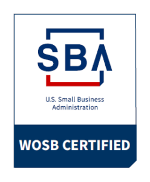
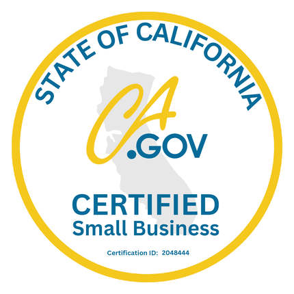
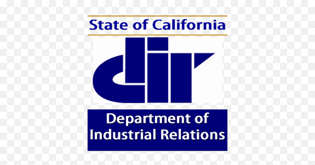
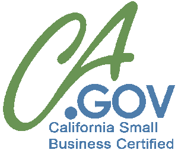
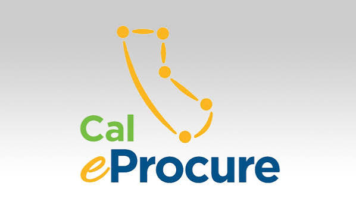
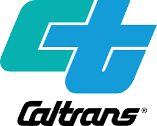
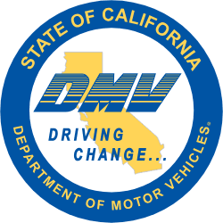
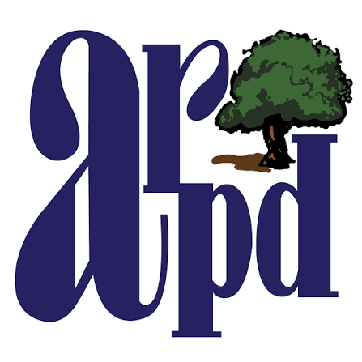

A certified small business, ready for your next solicitation.
Everything below is what a contracting officer needs to qualify Prime Clean as a vendor — public, current, and documented. Request the full capability statement for a procurement-ready summary.
Download the Capability Statement
One page: core competencies, differentiators, certifications, NAICS codes, and points of contact — formatted for procurement review and ready to attach to a solicitation packet.
Download Capability Statement (PDF)References available from current municipal & county service contracts.





Public Sector Departments We Proudly Service
From California state agencies to East Bay municipal recreation facilities, Prime Clean delivers compliant, auditable, and background-checked janitorial services under formal public procurement agreements.

Caltrans
California Department of Transportation — Operational facility janitorial, regional maintenance offices, and transit hubs.
State Transportation Agency
California DMV
Department of Motor Vehicles — High-traffic public service counters, administrative suites, and secure office sanitation.
State Civic AgencyCDCR
California Department of Corrections & Rehabilitation — Secured facility administrative buildings, parole offices, and training centers.
State Corrections & Public Safety
Alameda Parks & Rec
City of Alameda Recreation and Park Department — Municipal community centers, recreation offices, and civic park facilities.
Municipal & County ParksSet-asides and supplier diversity favor certified vendors.
Many municipal, county, and state solicitations require a minimum percentage of spend to go to certified small or diverse businesses. Partnering with Prime Clean directly satisfies those mandates while providing reliable, documented service.
WOSB Goal Fulfillment
Direct credit toward federal and state Women-Owned Small Business utilization requirements.
California Small Business Preference
Eligible for the 5% small business bid preference on state and participating local agency contracts.
Prevailing Wage & DIR Compliance
Registered with the California Department of Industrial Relations (DIR #1001318678) with certified payroll reporting ready.
Registered across the systems your team already uses.
SAM.gov
Active federal vendor registration with a current Unique Entity ID (UEI).
Cal eProcure
Registered in California's Small Business / DVBE vendor search, used by state agencies statewide. Certification No. 2041245.
County & City Portals
Alameda County, Contra Costa County, and the cities of Oakland, Richmond, and Berkeley.
Compliance, security clearances, and auditable logs.
Public buildings have high traffic, sensitive records, and strict oversight. Prime Clean deploys background-checked staff, prevailing-wage documentation, and electronic inspection sign-offs tailored for municipal and county administrative requirements.